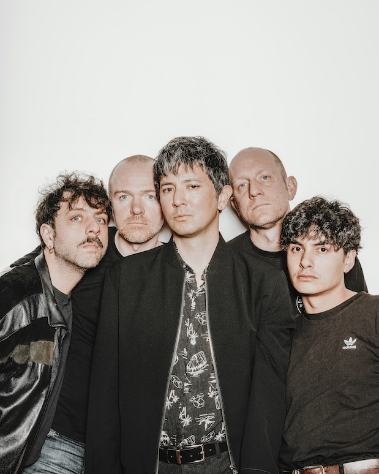

Post-punk quintet from Liège & Brussels

Photo: Laurent Meurice, 2026
BIO EN
RICHARICHAR draws from a lineage of modern post-punk acts such as Fontaines D.C. and Protomartyr, while reaching back to influences like Iggy Pop and the Velvet Underground.
These five regulars of the Belgian independent rock circuit (Eosine, It It Anita, Empereur, Two Kids on Holiday, Pirato Ketchup…) explore the dark corners of contemporary alienation, shaping a sound that is at once abrasive and fragile — where restraint collides with sudden bursts of intensity, and where the lyrics treat both modernity and nostalgia with equal contempt.
Following the release of their debut EP, Paraphernalia, in March 2026, the band is actively carving out their presence on European stages.
BIO FR
BIO NL
LIVE ACT
Known for intense and dynamic performances
Played at: OM, Micro Festival, Rockerill
MUSIC VIDEO
MUSIC
HIGHLIGHTS
- Winner of the SPHERES SONORES FINALS 2024 (selected among 100+ bands)
- Opened for the legendary UK band The Damned at OM, Liege
- Part of Micro Festival 2025 line-up
- Debut EP Paraphernalia released March 2026
BOOKING
Available for booking (clubs, festivals, support slots)
Contact us: richaricharmusic@gmail.com
Note for FWB promoters, RICHARICHAR is part of the "Art & Vie" programme.